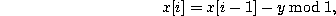
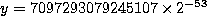

In some versions of CMU Common Lisp, the original generator above has been
replaced with a subtract-with-borrow generator
combined with a Weyl generator. The
reason for the change was to use a documented generator which has
passed tests for randomness.
The
reason for the change was to use a documented generator which has
passed tests for randomness.
The subtract-with-borrow generator is described by the following
equation
where z[i] is the i'th random number, which is a
double-float. All of the indices in this equation are
interpreted modulo 32. The quantity b is carried over from the
previous iteration and is either 0 or double-float-epsilon. If
z[i] is positive, b is set to zero. Otherwise, b is set to
double-float-epsilon.
To increase the randomness of this generator, this generator is
combined with a Weyl generator defined by

where . Thus, the resulting
random number r[i] is
This generator has been tested by Peter VanEynde using Marsaglia's diehard test suite for random number generators; this generator passes the test suite.
This generator is designed for generating floating-point random numbers. To obtain integers, the bits from the significand of the floating-point number are used as the bits of the integer. As many floating-point numbers as needed are generated to obtain the desired number of bits in the random integer.
For floating-point numbers, this generator can by significantly faster than the original generator.